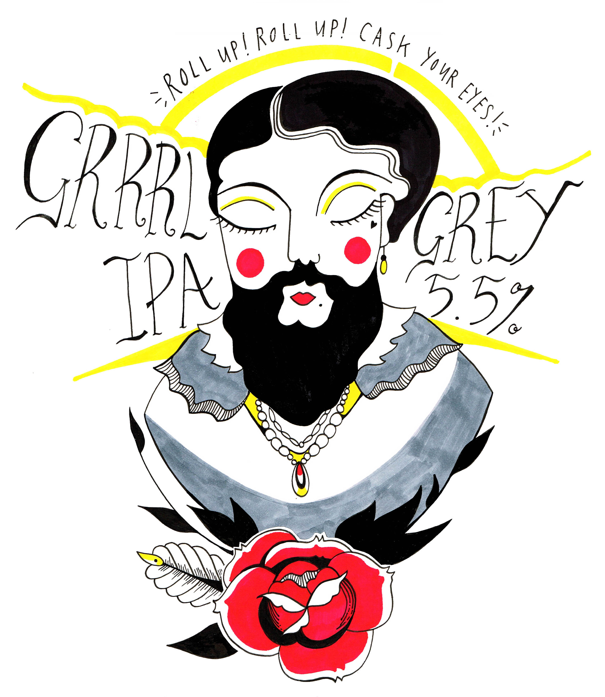
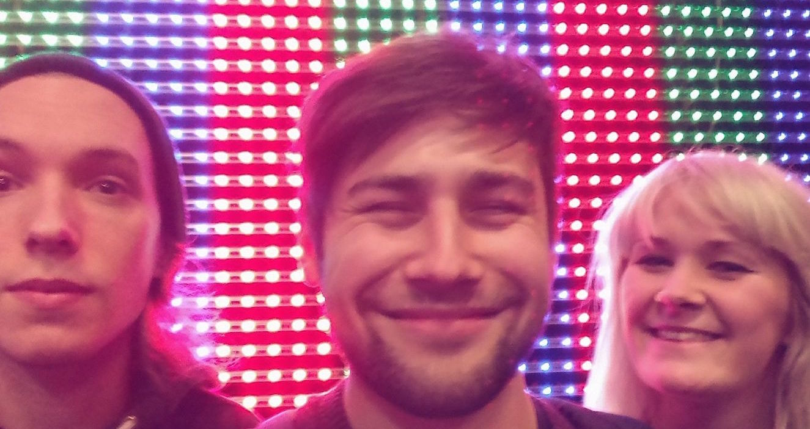
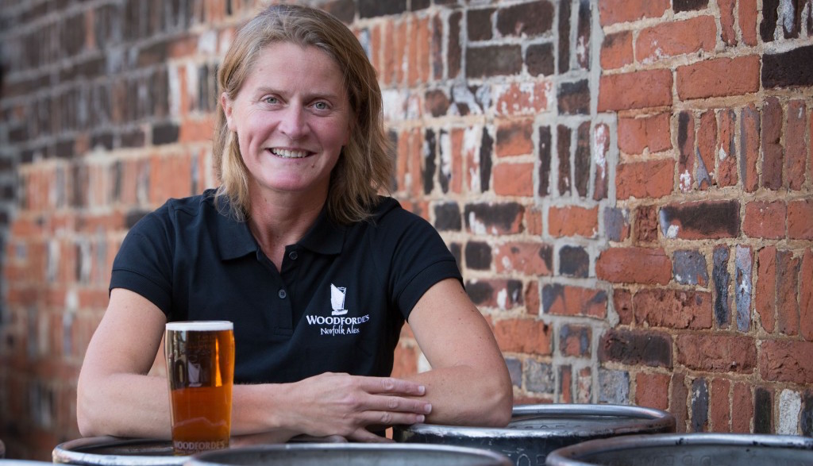
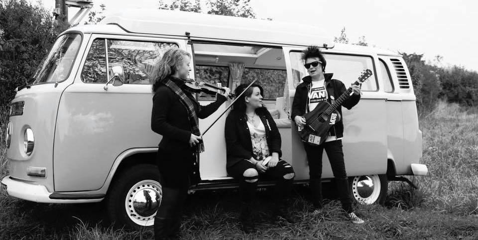

CELEBRATING WOMEN IN THE BREWING INDUSTRY

ABOUT
NORWICH
1st - 4th June 2018
BRIGHTON
4th - 6th MAY 2018
NOTTINGHAM
9th - 15th JUNE 2018
ABOUT FEM.ALE
FEM.ALE is a festival that showcases female led music and most importantly, beer brewed by women and enjoyed by everyone. Surprisingly, FEM.ALE is the first dedicated brewster festival in the U.K providing a platform to celebrate women in the beer industry through extensive lists of female brewed beer, meet-the-brewers, specially made one-off ales, panels, discussions and all sorts of other events.
We get asked a few questions on a regular basis – sometimes from people with genuine inquiries or wanting clarification, sometimes from people being snarky because… well, that’s what you get for pointing out gender inequality.
What counts as a Brewster beer?
All the beers at FEM.ALE are designed, developed and brewed by women or brew teams that are led by women. Most of the breweries we source from are pretty small, so it’s easy to define who’s doing the brewing, as opposed to other jobs such as the accounts or the marketing. At some of the bigger beer companies, it’s harder to tell who’s at the heart of the physical brewing process and the creative design process, so we go to the women in those organisations and ask them what beers they’ve been involved with or which they would recommend in the line-up of beers at the brew co. they work at.
What’s the difference between ‘craft beer’ and ‘real ale’?
Technically, not a lot. Or at least it depends on where you are. As a cultural phenomenon, craft beer emerged out of smaller batch American breweries in the 1990s and 2000s, Sierra Nevada being a brand that used ‘craftiness’ to offer an alternative beer identity to those at big beer co’s like Coors or Budweiser to huge commercial success. Here in the UK, thanks to CAMRA and the tireless work of thousands of brewers creating quality small batch beer, real ale breweries were always sort of…doing that anyway. However, while the American term ‘craft’ refers to the smaller volume of beer being produced, over here ‘craft’ refers more to the style. ‘Craft beer’ is often keg bound than barrel aged, is therefore fizzier and stronger American hops are used, giving American style craft beers a different, more pronounced hop flavour than ‘real ale’ does with our slightly less sun-drenched British-grown hops. Rain cloud emoji.
Where are all the women in cider-making??
We’re working on it!
Are men allowed at the festival (hurr hurr)?
Yes (hurr hurr). We welcome all genders to the party.
Is the beer… different?
Different… to what? If you’re a regular beer drinker, you’re probably already drinking Brewster beers on a regular basis. Our plan is to bring a selection of them together to celebrate women in an industry where we are largely underrepresented.
NORWICH 2017
For four days, all of the beer taps at The Plasterers Arms will be dedicated to pouring you the finest craft brews in the country, exclusively brewed by women.
✪ FRIDAY 26th - 7PM: ✪
LAUNCH PARTY
We're kicking off in our usual style with a launch party of local DJs spinning femme anthems to soundtrack a huge range of deliciousness available at the bar.
✪ SATURDAY 27th - 2PM ✪
PANEL DISCUSSION
We know no one's really sick of experts! Chaired by festival director Erica Horton, The Plasterers welcomes academics from UEA, Bournemouth and Leicester to share their research on craft work, histories of beer and how the industry is working today to diversify its work force. Sam Goodman joins us to discuss his research on beer and colonialism and the ways in which discourses of British entrepreneurship and Empire still appear in craft beer branding today. Helen Warner shares her research into gender and craft work and questions why, when women are increasingly moving into 'craft' industries and self employment, microbrewing and the rise of the craft beer industry has seen a continued male gendered identity. Chris Land and Scott Taylor will present some of their work on the craft beer industry and the ways in which discourses around gender in advertising and in the industry itself creates disparity in the labour force. Theyve interviewed all sorts of people working in beer - including us! As well as sharing academic research, we welcome all our local beer experts and brewers to take part in an interactive Q&A, where you can explore our speakers' thoughts further, and make your own voices heard in the conversation using your own experiences of beer and pub culture.
✪ SATURDAY 27th - 8PM ✪
OTHER HALF + SUPPORT
After all the book smarts and conversation we get live with femme fronted bands from Norfolk and beyond. All our events are free so come see your new favourite bands and swing your pants to your old favourites too!
✪ SUNDAY 28th - 11AM ✪
SUNDAY CINEMA - MY NEIGHBOR TOTORO
Classic family film from Studio Ghibli, which tells the story of two young daughters of a professor and their adventures with wood spirits in rural Japan. Breakfast is served in the pub from 10.
✪ SUNDAY 28th - 3PM ✪
BEER LAUNCH - WOODFORDE'S & PEOPLE'S BREWERY COLLABORATION
Join us for the launch of a one off beer brewed by Belinda from Woodfordes Brewery and Tracy from the People's Brewery. Have a chat with the brewers and get a taste of a unique brew from two women at the forefront of Norfolk brewing. We'll be running our FEM.ALE Film Club on Sunday with all the usual fair of weekend breakfast goodness on offer to soak up the beer deliciousness.
✪ SUNDAY 28th - 4PM ✪
SUNDAY SESSIONS - LATE NIGHTS // EARLY MORNINGS + ANDREA KING
More brilliant female led music from upbeat acoustic three piece Late Nights // Early Mornings, and singer Andrea King.
✪ SUNDAY 28th - 8PM ✪
SUNDAY CINEMA - FILM TBD!
Last year's screening of The Craft went was incredibly popular so we'll be projecting another smasher to sip along to on Sunday evening. This year though, we're running a competition to choose our Sunday evening film... it can be anything at all, but it has to pass the Bechdel test! Got a suggestion? Give us a tweet, or drop us a line on Facebook
✪ MONDAY 29th - 8PM ✪
PUB QUIZ
As its bank holiday weekend we'll be serving up more brewster beers all day Monday. Get your brain juices flowing and finish off the weekend with the FEM.ALE Pub Quiz, raising more funds for the 4women centre based in Norwich. All genders are welcome, as always, and all events are free all weekend, so come down, get yourself a beer and lets raise a glass to the women at the helm of the craft beer industry! Cheers!
✪ BEER LIST ✪
- Beavertown - Gamma Ray 5.4% pale
- Beavertown Bloody Ell - 7.2% IPA
- Cloudwater Double Dry Hopped Southern Passion, 5.8% pale
- Cloudwater DIPL 9% lager
- Cloudwater François BA Biere Brut, 6% BA saison
- Cloudwater - NW DIPA Citra, 9% DIPA
- Harviestoun - Wheat Beastie, 4.3%
- Harviestoun - Ola Dubh 12, 8% BA stout
- Magic Rock Magic Spanner - 3.9% pale
- Magic Rock - Half Cut, 8% DIPA
- Magic Rock - Grower Owned, 6% IPA
- Mallinsons Mosaic, 4% pale
- Mallinsons Citra, 3.8% pale
- Oldershaw - Blonde Volupta, 5% pale
- Oldershaw - Grantham Porter, 4.5% dark
- Oldershaw - Newton's Drop, 4.1% chestnut
- Tiny Rebel - Fugg Life, 4.2% pale
- Tiny Rebel - Juicy 4.8%
- Tiny Rebel - Billabong - 4.6%
- Tiny Rebel - Clwb Tropicana, 5.5% tropical fruit pale
- Tiny Rebel - Super Saison, 7.4% kaffir & lemon verbena saison
- Waen - Lemon Drizzle, 3.7% lemon vanilla pale
- Waen - Pamplemousse, 4.2% pale
- Waen - Snowball, 7% white chocolate stout
- Woodforde's - Hope In The Hops, 4.2% pale
- Woodfordes - Fem.Ale dry-hopped IPA, 7% IPA
- Woodfordes & People's Brewery Collab, 7% Black IPA
BRIGHTON 2018
The moment you've all been waiting for is here...
FEM.ALE IS BACK!
Our annual celebration of female brewsters takes place over the weekend of the 4th to the 6th of May, with Saturday 1pm - 6pm being our main event. Expect:
- A huge selection of fantastic ales all weekend
- Live music as part of our street party on Saturday
- DJs on Friday and Saturday nights
- Delicious vegan food
- Exciting market stalls powered by women
- Open Mic
- Clothing/ sleeping bag drive
SATURDAY 5th MAY
We will take to the street outside for a mega celebration. Bands to be announced soon! Don't make any other plans.
~ FREE ENTRY ~
Contact us if you are interested in our Open Mic slots! Anything from spoken word, music, storytelling,
a performance piece, let us know! Fully accessible event with ramp entrance into the pub.
NOTTINGHAM 2018
Female Brewster Pub Takeover: All five cask and all ten keg taps pouring nothing but beer brewed by women all week for Nottingham
Craft Beer Week 2018
Expect to see; Wild Card, Burnt Mill, Welbeck Abbey, Brewsters, Tiny Rebel, Charnwood, Dancing Duck,
Wiper & True and Hollowstone +more
✪ SATURDAY 9th JUNE 9pm
MISS BOWIE AND THE NEW KILLER STARS
Our unofficial Nottingham Craft Beer Week opening ceremony. Live music from female-fronted David Bowie tribute with a few unique twists. Miss Bowie and the New Killer Stars aim to do justice to the genius of David Bowie's music with authentic and heartfelt performances of their interpretations of his songs, at the same time as paying homage to the original versions. Lead vocalist Jane Roberts says “We are pretty sure David would have approved [of a female singer], his whole ethos on androgyny, boundary shattering, and (most importantly) on love, is something very close to our hearts.” Free entry. Drinks offers. Strictly over 18’s.
✪ SUNDAY 10TH JUNE 5pm
FEM.ALE PANEL DISCUSSION
Chaired by Erica Horton, Bunkers Hill welcomes Jaega Wise from Wild Card Brewery and newly appointed South East Director for SIBA, Claire Monk from Welbeck Abbey Brewery in Nottinghamshire and Natalie Bullin, Nottingham CAMRA Young Members Co-Ordinator. Arrive early to meet brewsters Jaega and Claire, five of each of their beers will be on tap.
✪ THURSDAY 14TH JUNE 8pm
AN EVENING WITH MELISSA COLE
ADV £10 / DOOR £16
Buy your tickets
here
This interactive tasting session will be hosted by award-winning beer & food writer and sommALEier
Melissa Cole, in an intimate space at Bunkers Hill in the Hockley area of Nottingham City Centre.
Whether you are an active beer enthusiast or are more 'beer curious', this session is for
you!
While you enjoy your first beer, Melissa will begin with a short talk, leading into a full tasting. Working through 6 beers (all included with your ticket) chosen from Bunkers Hill’s specially-selected FEM.ALE range, you will explore the breweries, beer styles, flavours and food pairing suggestions (Actual food optional but not included, sadly!), alongside a mini-Q&A!
Numbers are strictly limited (Only 50 tickets available). Tickets are £10 in advance, which includes 6 thirds of beer (Available online at gigantic.com).
✪ FRIDAY 15th JUNE & SATURDAY 16TH JUNE 10pm-2am
SISTERS OF SOUND
Nottingham-based vinyl only female DJ collective Sisters of Sound are providing the entertainment for the closing weekend of NCBW18 and they love music and dancing! Playing a pick’n’mix of styles including funk, soul, house, hip hop, garage surf, rock and indie. DJ’s include Stiff Kittens, Sue Starbuck and Ana Galhard +more